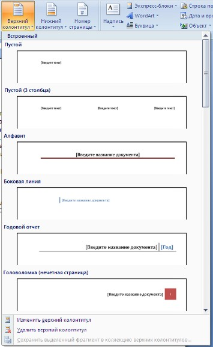
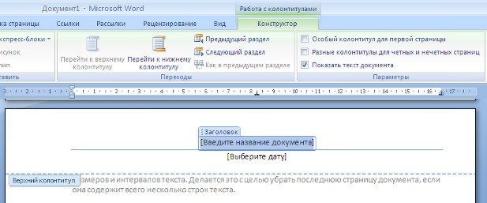
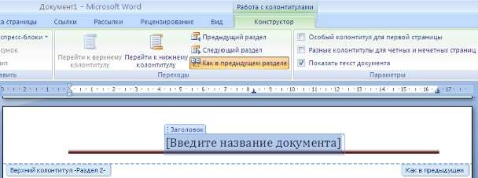
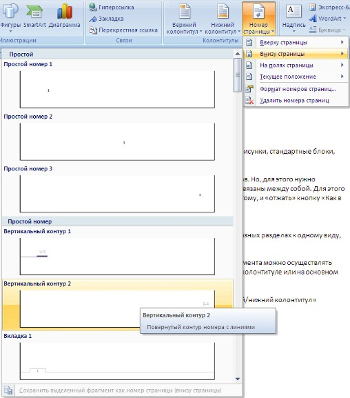
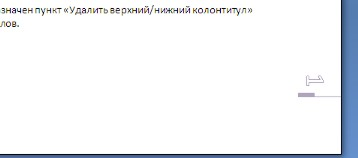
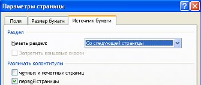

<< предыдущая лекция
|
Лекция 9. Колонтитулы и
нумерация страниц
|
следующая лекция >>
|
Из дополнительных возможностей форматирования наиболее
часто используется возможность создания колонтитулов. Колонтитулы представляют
собой области, расположенные на верхнем и нижнем полях страниц документа. В
колонтитулах, как правило, размещается такая информация, как название
документа, тема, имя автора, номера страниц или дата. При использовании
колонтитулов в документе можно размещать в них различный текст для четных или
нечетных страниц, для первой страницы документа, изменять положение
колонтитулов от страницы к странице и проч.
Для работы с колонтитулами в Word 2007 предназначена панель
"Колонтитулы" (лента "Вставка").

После вставки колонтитул доступен для редактирования,
при этом появляется контекстная лента "Конструктор" (Работа с
колонтитулами).

Отредактированный колонтитул можно добавить в галерею
колонтитулов при помощи опции "Сохранить выделенный фрагмент в
коллекцию верхних/нижних колонтитулов".
1.
Настройка колонтитула
Лента "Конструктор" контекстного
инструмента "Работа с колонтитулами" позволяет быстро
произвести такие настройки колонтитула, как:
·
различные
колонтитулы для четных и нечетных страниц;
·
отдельный
колонтитул для первой страницы;
·
скрытие
основного текста во время работы с колонтитулами;
·
вставка
и редактирование номера страницы;
·
управление
положением колонтитула;
·
вставка
в колонтитул различных объектов: текущие дата и время, рисунки, стандартные
блоки, объекты ClipArt.
Колонтитулы можно настраивать отдельно для различных
разделов. Но, для этого нужно разорвать между ними связь, т.к. по умолчанию все
колонтитулы связаны между собой. Для этого надо перейти к тому колонтитулу,
который надо оформить по-другому, и "отжать" кнопку "Как в
предыдущем разделе".

Если же, наоборот, есть необходимость привести
колонтитулы в разных разделах к одному виду, то кнопка "Как в предыдущем
разделе" должна быть "нажата".
Быстрый переход между колонтитулами и основным текстом
документа можно осуществлять двойным щелчком мыши на нужном элементе
(верхнем/нижнем колонтитуле или на основном тексте).
Для удаления колонтитулов предназначен пункт
"Удалить верхний/нижний колонтитул" соответствующих кнопок
колонтитулов.
2.
Нумерация страниц
Для нумерации страниц служит кнопка "Номер
страницы" (лента "Вставка", панель "Колонтитулы").

Необходимо выбрать вариант размещения номера на самой
странице и при необходимости настроить формат самого номера.

При необходимости элементы номеров страницы можно
сохранять, добавляя в коллекцию стандартных блоков. Для этого, вставив и
настроив номер, нажмите кнопку "Номер страницы" и выберите команду
"Вверху/внизу страницы"-"Сохранить выделенный фрагмент как номер
страницы".
Если возникнет необходимость убрать номер только с
первой страницы, нужно сделать следующее:
·
откройте
ленту "Разметка страницы";
·
откройте
окно панели "Параметры страницы";
·
на
вкладке "Источник бумаги" установите флажок "Различать колонтитулы
первой страницы".
